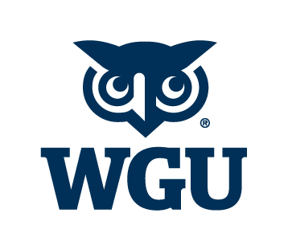
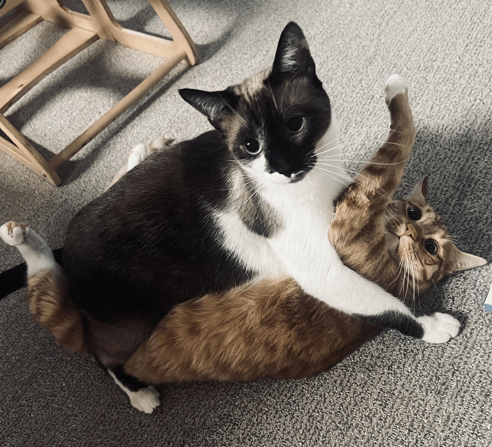

About Me
- I am 33 years young, I am at heart and by sign a Taurus.
- I am patient, strong willed "aka" bull headed, and will do anything for the people I love. I enjoy yoga and meditation.
- I am currently attending WGU to get my
bachelors degree in cybersecurity and am
working hard to graduate by 2028.

- I love all animals and exploring new places with my daughter.
My Pets

- Mitsy - Ornery orange tabby boy
- Monkey - Sweet little snowshoe